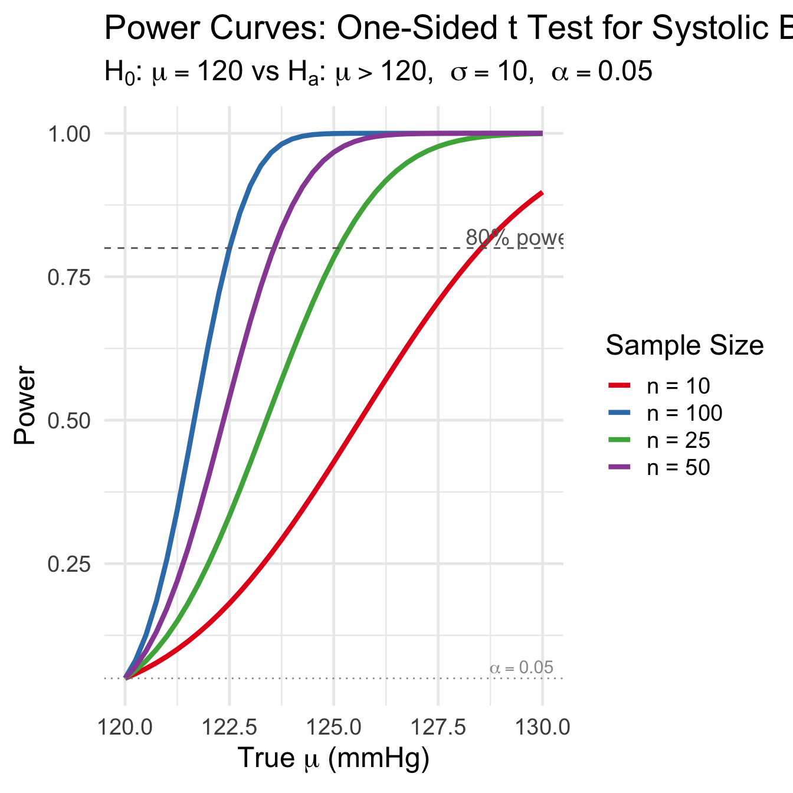
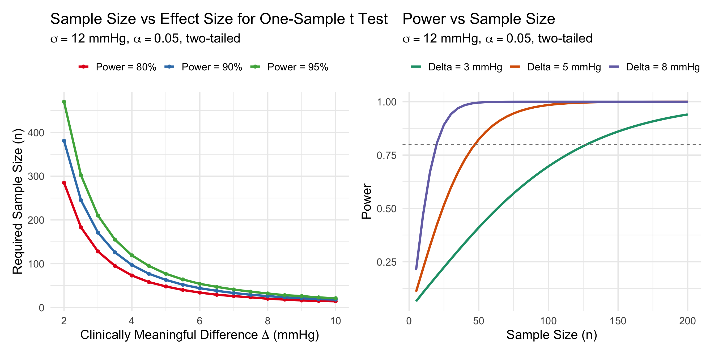
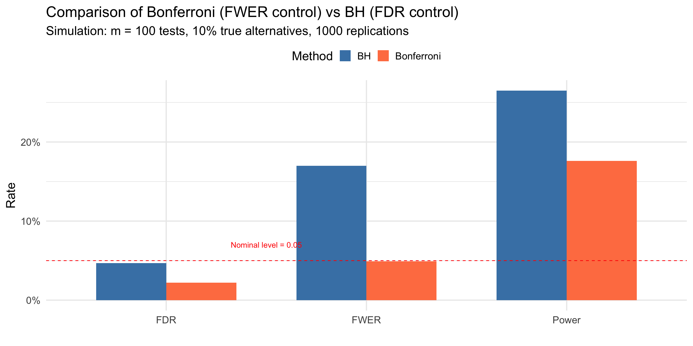

Lesson 14: P-Values; Power and Sample Size Determination
BSTA 551: Statistical Inference
Author
Jessica Minnier
Published
February 18, 2026
Lesson 14: P-Values; Power and Sample Size Determination
Review: Where We Left Off
Lesson 13: Tests About a Population Mean and Proportion
One-sample z test (\(\sigma\) known) and t test (\(\sigma\) unknown)
Score test and exact binomial test for proportions
Seven-step hypothesis testing procedure
CI-test duality: a \(100(1-\alpha)\%\) CI contains values not rejected at level \(\alpha\)
. . .
Today’s Goals:
Understand P-values as a continuous measure of evidence against \(H_0\)
Compute P-values for z and t tests
Understand the distribution of P-values under \(H_0\) and \(H_a\)
Use the noncentral t distribution for exact power calculations
Determine sample sizes for planning clinical trials using R
Roadmap for Today
Topic
Key Idea
Textbook
P-values
Probability of data as extreme or more extreme than observed
Devore 9.4
P-value distribution
Uniform under \(H_0\); concentrated near 0 under \(H_a\)
Devore 9.4
Power for the t test
Noncentral t distribution
Devore 9.2
Sample size determination
power.t.test() in R
Devore 9.2
. . .
Why This Matters
In medical research, P-values appear in virtually every published paper. Understanding what they mean — and what they do not mean — is essential for interpreting clinical evidence.
P-Values (Devore 9.4)
From Rejection Regions to P-Values
Recall the rejection region approach:
Fix \(\alpha\) (e.g., 0.05)
Find critical value(s)
Reject \(H_0\) if the test statistic falls in the rejection region
. . .
Limitation: The rejection region approach gives a binary decision (reject / fail to reject), but tells us nothing about how strongly the data contradict \(H_0\).
The rejection region approach treats these identically!
Definition of the P-Value
Definition (Devore 9.4)
The P-value is the probability, calculated assuming that the null hypothesis is true, of obtaining a value of the test statistic at least as contradictory to \(H_0\) as the value calculated from the available sample.
. . .
Key points:
The P-value is a probability
It is calculated assuming \(H_0\) is true
It is a function of the sample data (and therefore a random variable!)
We need to determine which values are “at least as contradictory” to \(H_0\)
Formal Definition of the P-Value
Let \(T = T(X_1, \ldots, X_n)\) be a test statistic and let \(t_{obs}\) be its observed value. For a test of \(H_0: \theta = \theta_0\) vs \(H_a\):
where \(P_{\theta_0}(\cdot)\) denotes probability calculated under \(H_0\).
. . .
Interpretation: The P-value measures how “extreme” or “surprising” the observed data would be if \(H_0\) were true. Smaller P-values indicate data that is less compatible with \(H_0\).
The P-Value as a Tail Probability
Consider an upper-tailed test with test statistic \(T\) having CDF \(F_T(t)\) under \(H_0\).
. . .
The P-value is the “survival function” evaluated at \(t_{obs}\):
Key insight: The P-value is the probability of observing a test statistic at least as extreme as what we actually observed, computed under the assumption that \(H_0\) is true.
. . .
Why “at least as extreme”?
If \(t_{obs}\) is unlikely under \(H_0\), then values even more extreme than \(t_{obs}\) must also be unlikely. The P-value captures the total probability of all outcomes at least as unfavorable to \(H_0\).
The Probability Integral Transformation
A fundamental result from probability theory underlies the distribution of P-values.
Theorem (Probability Integral Transformation)
Let \(X\) be a continuous random variable with CDF \(F_X\). Then the random variable
The second equality uses the fact that \(F_X\) is monotone increasing (for continuous \(X\)). Since \(P(U \leq u) = u\) for all \(u \in (0,1)\), we have \(U \sim \text{Uniform}(0,1)\). \(\blacksquare\)
Corollary: The Survival Function is Also Uniform
Corollary
If \(X\) is a continuous random variable with CDF \(F_X\), then
\[V = 1 - F_X(X)\]
also has a \(\text{Uniform}(0, 1)\) distribution.
. . .
Proof: If \(U \sim \text{Uniform}(0,1)\), then \(1 - U \sim \text{Uniform}(0,1)\) as well.
This is easily verified: \(P(1 - U \leq v) = P(U \geq 1 - v) = 1 - (1 - v) = v\). \(\blacksquare\)
. . .
Why this matters: For an upper-tailed test, the P-value is \(1 - F_T(T)\), which is exactly the survival function evaluated at the test statistic!
P-Values Are Uniform Under \(H_0\)
We can now state and prove the central result:
Theorem (Distribution of the P-Value Under \(H_0\))
Let \(T\) be a test statistic with continuous CDF \(F_T\) under \(H_0\). For an upper-tailed test, define the P-value as
\[P = 1 - F_T(T)\]
Then under \(H_0\), the P-value satisfies \(P \sim \text{Uniform}(0, 1)\).
. . .
Proof: Under \(H_0\), the test statistic \(T\) has CDF \(F_T\). By the probability integral transformation, \(F_T(T) \sim \text{Uniform}(0,1)\). By the corollary, \(P = 1 - F_T(T) \sim \text{Uniform}(0,1)\). \(\blacksquare\)
Consequence: P-Value Tests Maintain the Correct Size
This uniformity result has a crucial consequence for hypothesis testing.
Definition: Size of a Test
The size of a hypothesis test is the probability of rejecting \(H_0\) when \(H_0\) is true—i.e., the Type I error rate:
\[\text{Size} = P_{H_0}(\text{Reject } H_0) = P(\text{Type I Error})\]
A test has exact size\(\alpha\) if this probability equals \(\alpha\) exactly. A test has size at most\(\alpha\) if this probability is \(\leq \alpha\).
. . .
Theorem (Size of P-Value Tests)
If the P-value \(P\) has a \(\text{Uniform}(0,1)\) distribution under \(H_0\), then the test that rejects \(H_0\) when \(P \leq \alpha\) has exact size\(\alpha\).
where the last equality follows because \(P \sim \text{Uniform}(0,1)\) under \(H_0\). \(\blacksquare\)
. . .
Key insight: The P-value approach automatically guarantees that rejecting when P-value \(\leq \alpha\) produces a test with Type I error rate exactly equal to \(\alpha\). This is not a coincidence—it’s a direct consequence of the probability integral transformation!
Why This Matters: Equivalence of Approaches
Rejection region approach:
Choose \(\alpha\), find critical value \(c\) such that \(P_{H_0}(T \geq c) = \alpha\)
The P-value encodes all possible rejection decisions for any choice of \(\alpha\):
If P-value \(= 0.03\): reject at \(\alpha = 0.05\) but not at \(\alpha = 0.01\)
If P-value \(= 0.008\): reject at both \(\alpha = 0.05\) and \(\alpha = 0.01\)
P-Values for Discrete Test Statistics
Technical Note
The probability integral transformation requires \(T\) to be continuous. For discrete test statistics (e.g., the binomial), the P-value may not be exactly Uniform\((0,1)\).
. . .
Example: For the exact binomial test with \(H_0: p = 0.5\) and \(n = 10\), the P-value can only take finitely many values. The CDF of the P-value is a step function, not the identity.
. . .
Consequence: For discrete tests, \(P(P \leq \alpha) \leq \alpha\), with equality only when \(\alpha\) happens to coincide with one of the achievable P-values. The test is conservative (actual Type I error \(<\) nominal \(\alpha\)).
. . .
Resolution: Randomized tests can achieve exact size \(\alpha\), but are rarely used in practice. Instead, we accept the slight conservatism.
Conditional P-Values and Fisher’s Exact Test
The Problem of Nuisance Parameters
In many testing problems, the null hypothesis specifies a relationship but leaves some parameters unspecified.
. . .
Example: Testing independence in a 2×2 table
Disease+
Disease−
Total
Exposed
a
b
a + b
Not Exposed
c
d
c + d
Total
a + c
b + d
n
. . .
Hypotheses:
\(H_0\): Exposure and disease are independent (no association)
\(H_a\): Exposure and disease are associated
. . .
The problem: Under \(H_0\), the marginal probabilities \(p_1 = P(\text{Exposed})\) and \(p_2 = P(\text{Disease+})\) are nuisance parameters—unknown quantities not of direct interest.
Why Nuisance Parameters Complicate P-Values
To compute a P-value, we need to calculate \(P_{H_0}(T \geq t_{obs})\).
. . .
But under \(H_0: p_{11} = p_1 \cdot p_2\) (independence), the distribution of any test statistic depends on the unknown values of \(p_1\) and \(p_2\)!
. . .
Options:
Estimate the nuisance parameters and use asymptotic approximations (chi-squared test)
Eliminate the nuisance parameters by conditioning on sufficient statistics
. . .
Fisher’s exact test takes approach (2), which yields an exact P-value that is valid for any sample size.
The Conditionality Principle
Conditionality Principle (Informal)
If a statistic \(S\) is ancillary (its distribution doesn’t depend on the parameter of interest), then inference should be conducted conditional on the observed value of \(S\).
. . .
Intuition: Ancillary statistics carry no information about the parameter of interest, but they do affect the “precision” of the experiment. Conditioning on them focuses inference on the relevant variation.
. . .
For nuisance parameters: If \(S\) is a sufficient statistic for the nuisance parameter \(\eta\), then conditioning on \(S\) eliminates the dependence on \(\eta\).
Fisher’s Exact Test: Setup
Consider a \(2 \times 2\) table with fixed total \(n\). Let:
\(X\) = number in cell (1,1) (Exposed and Disease+)
Row totals \(r_1 = a + b\) and \(r_2 = c + d\) (fixed by design or conditioning)
Column totals \(c_1 = a + c\) and \(c_2 = b + d\)
. . .
Under \(H_0\) (independence) with both margins fixed, the cell count \(X\) follows a hypergeometric distribution:
By the factorization theorem, since the likelihood factors into a term depending on \((p_1, p_2)\) only through \((r_1, c_1)\), the margins are sufficient for the nuisance parameters.
The Conditional Distribution Eliminates Nuisance Parameters
Conditioning on the sufficient statistic \((r_1, c_1)\):
Fisher's Exact Test for Count Data
data: adverse_table
p-value = 0.06483
alternative hypothesis: true odds ratio is not equal to 1
95 percent confidence interval:
0.01546086 1.08434068
sample estimates:
odds ratio
0.1743672
cat("Odds ratio estimate:", round(fisher_result$estimate, 3), "\n")
Odds ratio estimate: 0.174
cat("95% CI for odds ratio:", round(fisher_result$conf.int[1], 3), "to", round(fisher_result$conf.int[2], 3), "\n")
95% CI for odds ratio: 0.015 to 1.084
Visualizing the Hypergeometric Distribution
Code
# Parameters from our examplen <-40; r1 <-20; c1 <-10x_obs <-2# Observed count in treatment/adverse cell# Possible values of Xx_vals <-0:min(r1, c1)probs <-dhyper(x_vals, m = c1, n = n - c1, k = r1)# Create data framehyper_data <-tibble(x = x_vals,prob = probs,extreme = x <= x_obs | x >= (r1 - (c1 - x_obs)) # Two-sided: as or more extreme than observed)# P-value componentspval_lower <-sum(probs[x_vals <= x_obs])pval_upper <-sum(probs[probs <= probs[x_obs +1]]) # Fisher's methodggplot(hyper_data, aes(x = x, y = prob, fill = extreme)) +geom_col(width =0.7, color ="black") +geom_vline(xintercept = x_obs, linetype ="dashed", color ="red", linewidth =1) +scale_fill_manual(values =c("gray70", "coral"), labels =c("Not extreme", "Extreme (contributes to P-value)")) +annotate("text", x = x_obs +0.3, y =max(probs) *0.9, hjust =0,label =paste0("Observed: X = ", x_obs), color ="red", size =5) +labs(x ="X (count in Treatment/Adverse cell)",y ="Probability",title ="Hypergeometric Distribution Under H0 (Conditional on Margins)",subtitle =paste0("n = ", n, ", r1 = ", r1, ", c1 = ", c1, "; P-value = ", round(fisher_result$p.value, 4)),fill ="") +theme(legend.position ="top")
Why Conditioning? A Deeper Look
The philosophical justification:
Sufficiency Principle: Inference should depend on the data only through sufficient statistics
Conditionality Principle: Inference should condition on ancillary statistics
. . .
When combined, these principles suggest conditioning on sufficient statistics for nuisance parameters.
. . .
The practical justification:
Conditioning produces a test with exact size \(\alpha\)
No large-sample approximations needed
Valid even for sparse tables or small samples
. . .
Caveat
Conditioning can reduce power compared to unconditional tests. This is the price of exactness. For large samples, the chi-squared test (which estimates nuisance parameters) may be more powerful.
Connection to Randomization Tests
Fisher’s exact test can also be viewed as a randomization test:
. . .
Setup: Fix the margins (total exposed, total diseased). Under \(H_0\), each possible table consistent with these margins is equally likely given the hypergeometric distribution.
. . .
The P-value is the proportion of possible tables that show an association at least as extreme as observed.
. . .
This connects to permutation testing: Under \(H_0\), “Disease” labels are exchangeable among subjects. The conditional P-value equals the proportion of permutations yielding a test statistic as extreme as observed.
# Fisher's exact test (two-sided by default)fisher_result <-fisher.test(response_table)# Display full outputfisher_result
Fisher's Exact Test for Count Data
data: response_table
p-value = 0.03071
alternative hypothesis: true odds ratio is not equal to 1
95 percent confidence interval:
1.121584 20.940769
sample estimates:
odds ratio
4.570771
Fisher’s Exact Test: Extracting Results
# Extract components for reportingcat("=== Fisher's Exact Test Results ===\n\n")
cat("95% CI for OR: [", round(fisher_result$conf.int[1], 2), ", ", round(fisher_result$conf.int[2], 2), "]\n\n")
95% CI for OR: [ 1.12 , 20.94 ]
# Decision at alpha = 0.05alpha <-0.05if (fisher_result$p.value <= alpha) {cat("Decision: Reject H0 at alpha =", alpha, "\n")cat("Conclusion: There is a statistically significant association\n")cat("between the genetic variant and treatment response.\n")} else {cat("Decision: Fail to reject H0 at alpha =", alpha, "\n")cat("Conclusion: Insufficient evidence of association.\n")}
Decision: Reject H0 at alpha = 0.05
Conclusion: There is a statistically significant association
between the genetic variant and treatment response.
Fisher’s Exact Test: One-Sided Alternatives
# If we have a directional hypothesis (variant improves response)fisher_greater <-fisher.test(response_table, alternative ="greater")fisher_less <-fisher.test(response_table, alternative ="less")cat("Two-sided P-value:", round(fisher_result$p.value, 4), "\n")
Use a one-sided test only when you have a strong a priori hypothesis about the direction of association, specified before seeing the data. In most exploratory studies, two-sided tests are more appropriate.
Comparing Fisher’s Exact Test to Chi-Squared Test
# Chi-squared test (asymptotic approximation)chisq_result <-chisq.test(response_table)chisq_result
Pearson's Chi-squared test with Yates' continuity correction
data: response_table
X-squared = 4.5938, df = 1, p-value = 0.03209
. . .
# Compare P-valuescat("\nComparison of P-values:\n")
cat("\nExpected counts (chi-squared assumes these are >= 5):\n")
Expected counts (chi-squared assumes these are >= 5):
round(chisq_result$expected, 1)
Non-responder Responder
Absent 15 12
Present 10 8
. . .
When to Use Fisher’s Exact Test
Use Fisher’s exact test when any expected cell count is < 5, or when exact P-values are required (e.g., regulatory submissions). For large samples with adequate expected counts, chi-squared is computationally faster and gives similar results.
Decision Rule Based on the P-Value
P-Value Decision Rule (Devore 9.4)
Select a significance level \(\alpha\). Then:
\[\text{Reject } H_0 \text{ if P-value} \leq \alpha; \qquad \text{Do not reject } H_0 \text{ if P-value} > \alpha\]
. . .
Equivalence to the rejection region method:
If the test statistic falls in the rejection region, then P-value \(\leq \alpha\)
If the test statistic falls outside the rejection region, then P-value \(> \alpha\)
. . .
Advantage: The P-value encodes more information than a binary reject/fail-to-reject decision. It conveys the strength of evidence against \(H_0\).
P-Values for z Tests
For a z test (test statistic \(Z\) with \(Z \sim N(0,1)\) under \(H_0\)):
\[\text{P-value} = \begin{cases} 1 - \Phi(z) & \text{for an upper-tailed test } (H_a: \mu > \mu_0) \\[6pt] \Phi(z) & \text{for a lower-tailed test } (H_a: \mu < \mu_0) \\[6pt] 2[1 - \Phi(|z|)] & \text{for a two-tailed test } (H_a: \mu \neq \mu_0) \end{cases}\]
where \(\Phi(z)\) is the standard normal CDF and \(z\) is the observed test statistic.
. . .
# Quick R reminders for P-value computationz_obs <-2.15cat("Upper-tailed P-value:", 1-pnorm(z_obs), "\n")
t.test() and prop.test() automatically compute P-values. Manual computation is needed only for understanding and for non-standard situations.
Medical Examples: Computing P-Values
Example: Hemoglobin A1c Levels in Diabetic Patients
Setting: A diabetes clinic is evaluating whether a new management protocol changes mean hemoglobin A1c (HbA1c) levels. The standard target is 7.0%. A sample of \(n = 20\) patients on the new protocol gives \(\bar{x} = 7.42\%\) and \(s = 0.95\%\).
Question: Is there evidence that the new protocol produces different mean HbA1c than the target?
. . .
# Data summaryn <-20xbar <-7.42s <-0.95mu0 <-7.0# Test statistict_stat <- (xbar - mu0) / (s /sqrt(n))cat("Test statistic: t =", round(t_stat, 3), "\n")
df <-19t_seq <-seq(-5, 5, length.out =500)y_t <-dt(t_seq, df = df)tibble(t = t_seq, y = y_t) |>ggplot(aes(x = t, y = y)) +geom_line(linewidth =1.2, color ="steelblue") +geom_area(data =tibble(t = t_seq[t_seq >=abs(t_stat)], y =dt(t_seq[t_seq >=abs(t_stat)], df)),aes(x = t, y = y), fill ="coral", alpha =0.6) +geom_area(data =tibble(t = t_seq[t_seq <=-abs(t_stat)], y =dt(t_seq[t_seq <=-abs(t_stat)], df)),aes(x = t, y = y), fill ="coral", alpha =0.6) +geom_vline(xintercept =c(-abs(t_stat), abs(t_stat)), linetype ="dashed", color ="red", linewidth =1) +annotate("text", x = t_stat +0.2, y =0.15, hjust =0, size =5, color ="red",label =paste0("t = ", round(t_stat, 2))) +annotate("text", x =0, y =0.25, size =6, color ="coral",label =paste0("P-value = ", round(p_value, 4))) +labs(x ="t", y ="Density",title =expression("Two-Tailed t Test: HbA1c Levels ("* t[19] *" distribution)"),subtitle =expression(paste(H[0], ": ", mu ==7.0, "% vs ", H[a], ": ", mu !=7.0, "%")))
HbA1c Example: Complete Analysis with t.test()
# Simulate individual patient data consistent with our summary statisticsset.seed(2026)hba1c <-rnorm(20, mean =7.42, sd =0.95)# Adjust to match desired summary statistics closelyhba1c <- (hba1c -mean(hba1c)) /sd(hba1c) *0.95+7.42# Full t.test outputhba1c_test <-t.test(hba1c, mu =7.0, alternative ="two.sided")hba1c_test
One Sample t-test
data: hba1c
t = 1.9772, df = 19, p-value = 0.06272
alternative hypothesis: true mean is not equal to 7
95 percent confidence interval:
6.975386 7.864614
sample estimates:
mean of x
7.42
. . .
Interpretation: At \(\alpha = 0.05\), the P-value of 0.0627 is less than 0.05, so we reject \(H_0\). There is statistically significant evidence that the mean HbA1c under the new protocol differs from 7.0%.
Example: Serum Transferrin Receptor in Pregnancy (Devore 9.4, Exercise 55)
Setting: The average serum transferrin receptor concentration for all women is known to be 5.63 mg/L. A study reported P-value > 0.10 for testing \(H_0: \mu = 5.63\) vs \(H_a: \mu \neq 5.63\) based on \(n = 176\) pregnant women.
. . .
Question: Using \(\alpha = 0.01\), what would you conclude?
cat("Since 0.10 >", alpha, ", we fail to reject H0.\n\n")
Since 0.10 > 0.01 , we fail to reject H0.
cat("Conclusion: There is insufficient evidence at the 0.01\n")
Conclusion: There is insufficient evidence at the 0.01
cat("significance level to conclude that the mean serum\n")
significance level to conclude that the mean serum
cat("transferrin receptor concentration for pregnant women\n")
transferrin receptor concentration for pregnant women
cat("differs from the value of 5.63 mg/L for all women.")
differs from the value of 5.63 mg/L for all women.
Example: Post-Surgical Recovery Time
Setting: The standard mean recovery time after a particular surgery is 14 days. A surgeon has adopted a new minimally invasive technique and records recovery times for 15 patients.
recovery <-c(11.2, 13.5, 10.8, 12.1, 14.3, 9.7, 11.9, 12.8,10.5, 13.1, 11.4, 12.6, 10.2, 13.8, 11.1)# One-sided test: H0: mu = 14 vs Ha: mu < 14recovery_test <-t.test(recovery, mu =14, alternative ="less")recovery_test
One Sample t-test
data: recovery
t = -5.7665, df = 14, p-value = 2.441e-05
alternative hypothesis: true mean is less than 14
95 percent confidence interval:
-Inf 12.56457
sample estimates:
mean of x
11.93333
This extremely small P-value provides overwhelming evidence that the new surgical technique reduces mean recovery time below the standard 14 days.
The Distribution of P-Values (Devore Example 9.22)
P-Values Are Random Variables
The P-value is computed from the test statistic, which is computed from sample data. Different samples yield different test statistics and therefore different P-values.
. . .
Key theoretical results:
When \(H_0\) is true: the P-value has a Uniform(0, 1) distribution
When \(H_0\) is false: the P-value distribution is concentrated near 0
. . .
Why Uniform Under \(H_0\)?
If \(H_0\) is true, then \(P(\text{P-value} \leq \alpha) = \alpha\) for any \(\alpha \in [0, 1]\). This is precisely the definition of a Uniform(0, 1) distribution!
Recap: P-Value Uniformity via the Probability Integral Transform
Recall our earlier result: if \(T\) has continuous CDF \(F_T\) under \(H_0\), then \(P = 1 - F_T(T) \sim \text{Uniform}(0,1)\).
. . .
For the z test specifically:
Let \(Z = \frac{\bar{X} - \mu_0}{\sigma/\sqrt{n}} \sim N(0,1)\) under \(H_0\). The P-value for an upper-tailed test is:
\[P = 1 - \Phi(Z)\]
. . .
Since \(\Phi\) is the CDF of \(Z\), this is exactly the survival function form, and the probability integral transformation gives us \(P \sim \text{Uniform}(0,1)\).
What Happens Under the Alternative?
Under \(H_a: \mu > \mu_0\), the test statistic \(Z = \frac{\bar{X} - \mu_0}{\sigma/\sqrt{n}}\) is not standard normal.
. . .
Instead, \(Z\) has mean \(\frac{\mu - \mu_0}{\sigma/\sqrt{n}} > 0\), so \(Z\) tends to be positive and large.
. . .
Consequence for the P-value:
\[P = 1 - \Phi(Z) = P_{H_0}(Z' \geq Z)\]
When \(Z\) tends to be large and positive, \(\Phi(Z) \to 1\), so \(P \to 0\).
. . .
The farther \(\mu\) is from \(\mu_0\):
The more \(Z\) is shifted to the right
The larger \(\Phi(Z)\) becomes
The smaller the P-value \(P = 1 - \Phi(Z)\)
The more P-values concentrate near 0
The Distribution of P-Values: A Unified View
Let \(\delta = \frac{\mu - \mu_0}{\sigma/\sqrt{n}}\) be the noncentrality parameter (standardized effect size).
cat(" H0 false (mu = 31):", round(mean(pvals_mu31 <=0.05), 3), " (power at mu = 31)\n")
H0 false (mu = 31): 0.201 (power at mu = 31)
cat(" H0 false (mu = 32):", round(mean(pvals_mu32 <=0.05), 3), " (power at mu = 32)\n")
H0 false (mu = 32): 0.462 (power at mu = 32)
. . .
Key insights (Devore Example 9.22):
When \(H_0\) is true, the P-value histogram is approximately flat (Uniform)
Only ~5% of P-values fall below 0.05, confirming \(\alpha\) controls the Type I error rate
As \(\mu\) moves farther from \(\mu_0 = 30\), P-values concentrate closer to 0
Even at \(\mu = 32\), power is less than 50% because \(n = 4\) is very small!
Common Misinterpretations of P-Values
What the P-Value is NOT
Not the probability that \(H_0\) is true: P-value \(\neq P(H_0 \text{ is true} \mid \text{data})\)
Not the probability of making an error: it is \(P(\text{data this extreme} \mid H_0 \text{ true})\)
Not a measure of effect size: a small P-value can arise from a tiny effect with large \(n\)
A P-value of 0.05 does not mean there is a 5% chance \(H_0\) is true
Failing to reject \(H_0\) does not mean \(H_0\) is true (absence of evidence \(\neq\) evidence of absence)
. . .
ASA Statement on P-Values (2016)
The American Statistical Association emphasized: “a P-value does not provide a good measure of evidence regarding a model or hypothesis.” P-values should be supplemented with effect sizes, confidence intervals, and clinical judgment.
Statistical vs Clinical Significance
Code
# Large sample can detect trivially small effectsset.seed(551)n_large <-5000bp_data <-rnorm(n_large, mean =120.3, sd =15) # Mean barely above 120bp_test <-t.test(bp_data, mu =120)cat("n =", n_large, "\n")
cat("Clinically meaningful difference? A 0.3 mmHg difference\n")
Clinically meaningful difference? A 0.3 mmHg difference
Code
cat("in systolic BP has NO clinical relevance!")
in systolic BP has NO clinical relevance!
. . .
Practical Advice for Medical Research
Always report both the P-value and a confidence interval. The CI gives a range of plausible values for the effect size, which is what clinicians actually need for decision-making.
Power for the t Test: The Noncentral t Distribution
Review: Power for the z Test (Lesson 13)
For the one-sample z test (\(\sigma\) known), we derived closed-form expressions:
where \(F(x; m, \delta)\) is the CDF of the noncentral \(t\) distribution.
. . .
In R:pt(t_crit, df, ncp = delta, lower.tail = FALSE)
. . .
# Example (Devore Example 9.14 adapted to medical context):# Testing whether mean systolic BP exceeds 120 mmHg# H0: mu = 120, Ha: mu > 120, alpha = 0.05, n = 10, sigma = 10# What is the power when mu' = 125?n <-10; mu0 <-120; mu_prime <-125; sigma <-10; alpha <-0.05delta <- (mu_prime - mu0) / (sigma /sqrt(n))t_crit <-qt(1- alpha, df = n -1)power <-pt(t_crit, df = n -1, ncp = delta, lower.tail =FALSE)cat("Noncentrality parameter: delta =", round(delta, 3), "\n")
alpha <-0.05mu0 <-120# null value for systolic BPsigma <-10# Power curves for different sample sizessample_sizes <-c(10, 25, 50, 100)mu_range <-seq(120, 130, by =0.25)power_data <-expand_grid(n = sample_sizes, mu_prime = mu_range) |>mutate(delta = (mu_prime - mu0) / (sigma /sqrt(n)),t_crit =qt(1- alpha, df = n -1),power =pt(t_crit, df = n -1, ncp = delta, lower.tail =FALSE),n_label =paste0("n = ", n) )ggplot(power_data, aes(x = mu_prime, y = power, color = n_label)) +geom_line(linewidth =1.5) +geom_hline(yintercept =0.80, linetype ="dashed", color ="gray40") +geom_hline(yintercept = alpha, linetype ="dotted", color ="gray60") +annotate("text", x =129.5, y =0.82, label ="80% power", color ="gray40", size =5) +annotate("text", x =129.5, y =0.07, label =expression(alpha ==0.05), color ="gray60", size =4) +scale_color_brewer(palette ="Set1") +labs(x =expression("True "* mu *" (mmHg)"),y ="Power",color ="Sample Size",title ="Power Curves: One-Sided t Test for Systolic Blood Pressure",subtitle =expression(paste(H[0], ": ", mu ==120, " vs ", H[a], ": ", mu >120, ", ", sigma ==10, ", ", alpha ==0.05)))

Key Features of Power Curves
Two intuitive features:
For any fixed departure from \(H_0\), power increases with sample size
For any fixed sample size, power increases as \(\mu'\) moves farther from \(\mu_0\)
. . .
Factors that increase power:
Larger \(n\): more data \(\Rightarrow\) smaller SE \(\Rightarrow\) easier to detect departures
Larger effect size\(|\mu' - \mu_0|\): bigger departures are easier to detect
Smaller \(\sigma\): less noise \(\Rightarrow\) easier to detect signal
Larger \(\alpha\): easier to reject (but at the cost of more Type I errors)
. . .
Clinical Trial Implication
The power analysis must be conducted before collecting data. It ensures the study has sufficient sample size to detect a clinically meaningful effect.
Sample Size Determination
Why Determine Sample Size?
Clinical scenario: You are designing a randomized trial to test whether a new antihypertensive drug lowers systolic blood pressure more than a placebo.
. . .
Key questions:
How many patients do we need to detect a meaningful effect?
What effect size is clinically important?
What balance of Type I and Type II errors is acceptable?
# How many patients to detect a 5 mmHg reduction with 80% power?delta <-5# clinically meaningful difference (mmHg)sigma <-15# estimated SDalpha <-0.05beta <-0.20# power = 0.80# Two-tailed z testn_z <- (sigma * (qnorm(1- alpha/2) +qnorm(1- beta)) / delta)^2cat("z test sample size (two-tailed):", ceiling(n_z), "patients")
z test sample size (two-tailed): 71 patients
R’s power.t.test() Function
R provides power.t.test() for sample size and power calculations for the one-sample and two-sample t tests. It accounts for the noncentral t distribution automatically.
. . .
# Same example using power.t.test()result <-power.t.test(delta =5, # difference to detectsd =15, # estimated standard deviationsig.level =0.05, # alphapower =0.80, # desired powertype ="one.sample", # one-sample testalternative ="two.sided")result
One-sample t test power calculation
n = 72.58407
delta = 5
sd = 15
sig.level = 0.05
power = 0.8
alternative = two.sided
Example: Planning a Clinical Trial for Blood Pressure
Setting: Researchers are planning a trial to test whether a new drug reduces systolic blood pressure. Historical data suggests \(\sigma \approx 12\) mmHg. A reduction of 5 mmHg is considered clinically meaningful.
# One-sided test: H0: mu >= 0 vs Ha: mu < 0 (reduction in BP)power_result <-power.t.test(delta =5,sd =12,sig.level =0.05,power =0.80,type ="one.sample",alternative ="one.sided")cat("For 80% power:", ceiling(power_result$n), "patients needed\n")
For 80% power: 38 patients needed
# What about 90% power?power_90 <-power.t.test(delta =5, sd =12, sig.level =0.05,power =0.90, type ="one.sample", alternative ="one.sided")cat("For 90% power:", ceiling(power_90$n), "patients needed\n")
For 90% power: 51 patients needed
# What about a smaller effect (3 mmHg)?power_small <-power.t.test(delta =3, sd =12, sig.level =0.05,power =0.80, type ="one.sample", alternative ="one.sided")cat("For 3 mmHg effect:", ceiling(power_small$n), "patients needed")
For 3 mmHg effect: 101 patients needed
Sample Size as a Function of Effect Size and Power
Code
sigma <-12alpha <-0.05# Vary effect sizedelta_range <-seq(2, 10, by =0.5)power_levels <-c(0.80, 0.90, 0.95)ss_data <-expand_grid(delta = delta_range, power = power_levels) |>rowwise() |>mutate(n =ceiling(power.t.test(delta = delta, sd = sigma, sig.level = alpha,power = power, type ="one.sample", alternative ="two.sided" )$n),power_label =paste0("Power = ", power *100, "%") ) |>ungroup()p_ss <-ggplot(ss_data, aes(x = delta, y = n, color = power_label)) +geom_line(linewidth =1.5) +geom_point(size =2) +scale_color_brewer(palette ="Set1") +labs(x =expression("Clinically Meaningful Difference "* Delta *" (mmHg)"),y ="Required Sample Size (n)",color ="",title ="Sample Size vs Effect Size for One-Sample t Test",subtitle =expression(paste(sigma ==12, " mmHg, ", alpha ==0.05, ", two-tailed"))) +theme(legend.position ="top")# Power as a function of n for fixed deltan_range <-seq(5, 200, by =5)delta_levels <-c(3, 5, 8)pow_data <-expand_grid(n = n_range, delta = delta_levels) |>rowwise() |>mutate(power =power.t.test(n = n, delta = delta, sd = sigma, sig.level = alpha,type ="one.sample", alternative ="two.sided" )$power,delta_label =paste0("Delta = ", delta, " mmHg") ) |>ungroup()p_pow <-ggplot(pow_data, aes(x = n, y = power, color = delta_label)) +geom_line(linewidth =1.5) +geom_hline(yintercept =0.80, linetype ="dashed", color ="gray50") +scale_color_brewer(palette ="Dark2") +labs(x ="Sample Size (n)", y ="Power",color ="",title ="Power vs Sample Size",subtitle =expression(paste(sigma ==12, " mmHg, ", alpha ==0.05, ", two-tailed"))) +theme(legend.position ="top")p_ss + p_pow

Example: Neonatal ICU Glucose Monitoring
Setting: A neonatal ICU has historically maintained mean blood glucose at 80 mg/dL (sd = 20 mg/dL) in premature infants. A new feeding protocol is introduced. The clinical team wants to detect any shift in mean glucose of at least 8 mg/dL with 90% power.
# How many infants are needed?nicu_power <-power.t.test(delta =8,sd =20,sig.level =0.05,power =0.90,type ="one.sample",alternative ="two.sided")cat("=== NICU Study Design ===\n")
# Verify: what is the actual power at this sample size?actual_power <-power.t.test(n =ceiling(nicu_power$n),delta =8,sd =20,sig.level =0.05,type ="one.sample",alternative ="two.sided")cat("Actual power at n =", ceiling(nicu_power$n), ":", round(actual_power$power, 4))
Actual power at n = 68 : 0.9016
Manual Power Calculation with the Noncentral t
Let’s verify power.t.test() using the noncentral t distribution directly:
Always report P-values AND confidence intervals — the CI tells you about effect size
Conduct power analysis BEFORE the study — not after!
Use clinically meaningful effect sizes — not just “any” difference
Don’t p-hack: pre-register hypotheses and analysis plans
Interpret in context: a P-value of 0.048 vs 0.052 should not lead to radically different conclusions
Consider multiple comparisons: if testing many hypotheses, adjust \(\alpha\) (Bonferroni, FDR, etc.)
. . .
FDA Guidance
Clinical trials typically require \(\alpha = 0.05\) (two-sided) and power \(\geq 0.80\). Phase III trials often require power \(\geq 0.90\) to ensure adequate evidence for drug approval.
Multiple Testing and P-Value Adjustment
The Multiple Testing Problem
Scenario: A genomics study tests 20,000 genes for differential expression between tumor and normal tissue. Using \(\alpha = 0.05\) for each test…
. . .
Expected false positives under \(H_0\) (no true effects):
Even if no genes are truly differentially expressed, we expect ~1,000 “significant” results by chance alone!
. . .
The Core Problem
When conducting \(m\) hypothesis tests, the probability of making at least one Type I error grows rapidly with \(m\), even if each individual test has size \(\alpha\).
Family-Wise Error Rate (FWER)
Definition
The family-wise error rate (FWER) is the probability of making one or more Type I errors among all \(m\) tests:
\[\text{FWER} = P(\text{at least one false rejection})\]
. . .
If the \(m\) tests are independent and all null hypotheses are true:
cat(" BH discoveries that are true effects:", sum(results$BH[1:n_true_effects] <=0.05), "\n")
BH discoveries that are true effects: 5
Simulation: Comparing FWER and FDR Control
Code
set.seed(551)n_sims <-1000m <-100# tests per simulationpi0 <-0.9# proportion of true nullssim_results <-map_dfr(1:n_sims, function(sim) {# Generate P-values n_null <-round(m * pi0) n_alt <- m - n_null pvals <-c(runif(n_null), rbeta(n_alt, 0.3, 5)) true_null <-c(rep(TRUE, n_null), rep(FALSE, n_alt))# Apply corrections bonf_reject <-p.adjust(pvals, "bonferroni") <=0.05 bh_reject <-p.adjust(pvals, "BH") <=0.05tibble(sim = sim,# FWER: any false rejection among true nulls?bonf_any_fp =any(bonf_reject & true_null),bh_any_fp =any(bh_reject & true_null),# FDR: proportion of rejections that are falsebonf_fdr =sum(bonf_reject & true_null) /max(sum(bonf_reject), 1),bh_fdr =sum(bh_reject & true_null) /max(sum(bh_reject), 1),# Power: proportion of true alternatives detectedbonf_power =sum(bonf_reject &!true_null) / n_alt,bh_power =sum(bh_reject &!true_null) / n_alt )})# Summarizesummary_stats <- sim_results |>summarise(`Bonferroni FWER`=mean(bonf_any_fp),`BH FWER`=mean(bh_any_fp),`Bonferroni FDR`=mean(bonf_fdr),`BH FDR`=mean(bh_fdr),`Bonferroni Power`=mean(bonf_power),`BH Power`=mean(bh_power) )summary_long <- summary_stats |>pivot_longer(everything(), names_to ="metric", values_to ="value") |>separate(metric, into =c("Method", "Measure"), sep =" ", extra ="merge")ggplot(summary_long, aes(x = Measure, y = value, fill = Method)) +geom_col(position ="dodge", width =0.7) +geom_hline(yintercept =0.05, linetype ="dashed", color ="red") +annotate("text", x =1.5, y =0.07, label ="Nominal level = 0.05", color ="red", size =4) +scale_fill_manual(values =c("BH"="steelblue", "Bonferroni"="coral")) +scale_y_continuous(labels = scales::percent, limits =c(0, NA)) +labs(x ="", y ="Rate",title ="Comparison of Bonferroni (FWER control) vs BH (FDR control)",subtitle =paste0("Simulation: m = ", m, " tests, ", (1-pi0)*100, "% true alternatives, ", n_sims, " replications")) +theme(legend.position ="top")

When to Use Which Correction?
Decision Framework
Use FWER control (Bonferroni/Holm) when:
False positives have serious consequences (e.g., drug approval)
Small number of pre-specified hypotheses
Confirmatory analysis with regulatory implications
Use FDR control (BH) when:
Exploratory analysis where findings will be validated
Large number of tests (genomics, neuroimaging)
Some false discoveries are acceptable in exchange for more power
Generating hypotheses for future studies
. . .
Medical research examples:
Phase III clinical trial (primary endpoint): Bonferroni or no adjustment (single test)
Genome-wide association study: BH or even less stringent (will be replicated)
Multiple secondary endpoints: Holm or Hochberg
Biomarker discovery panel: BH
Multiple Testing: Summary
The problem: Multiple tests inflate the chance of false discoveries
FWER = P(at least one false positive); controlled by Bonferroni, Holm
FDR = E(proportion of false discoveries); controlled by BH, BY
Trade-off: Stricter error control \(\Rightarrow\) lower power
In R:p.adjust(pvalues, method = "bonferroni") or method = "BH"
. . .
Key Insight
Multiple testing adjustment is not optional—it’s a fundamental requirement for honest science. Always report whether and how P-values were adjusted.
Key Takeaways and Looking Ahead
Key Takeaways
Today’s Main Points
P-value definition: probability of observing data as extreme or more extreme, assuming \(H_0\) is true
P-value uniformity: Under \(H_0\), P-values are Uniform(0,1) by the probability integral transformation
Size of a test: P-value tests have exact size \(\alpha\) because \(P(P \leq \alpha) = \alpha\) when \(P \sim \text{Uniform}(0,1)\)
Conditional P-values: Fisher’s exact test conditions on sufficient statistics to eliminate nuisance parameters
Noncentral t: when \(H_0\) is false, \(T\) follows a noncentral \(t\) with \(\delta = (\mu' - \mu_0)/(\sigma/\sqrt{n})\)
Power in R:pt(t_crit, df, ncp = delta) for manual; power.t.test() for convenience
Multiple testing: FWER controlled by Bonferroni/Holm; FDR controlled by BH procedure
. . .
Common mistakes to avoid:
Interpreting P-value as \(P(H_0 \text{ true})\)
Confusing statistical and clinical significance
Computing power after seeing the data (post hoc power)
Failing to adjust for multiple comparisons in exploratory analyses
Using Bonferroni when FDR control would be more appropriate (and vice versa)
Looking Ahead
Next class (Lesson 15): Neyman-Pearson Lemma; Likelihood Ratio Tests (Devore 9.5)
Most powerful tests for simple hypotheses
The Neyman-Pearson framework
Likelihood ratio test statistic
Connection to tests we’ve already learned
References
Devore, Berk, and Carlton. Modern Mathematical Statistics with Applications (Springer). Sections 9.2, 9.4
Chihara and Hesterberg. Mathematical Statistics with Resampling and R (Wiley). Sections 8.1–8.2
Wasserstein, R. L., & Lazar, N. A. (2016). The ASA Statement on p-Values: Context, Process, and Purpose. The American Statistician, 70(2), 129–133.
Fisher, R. A. (1922). On the interpretation of \(\chi^2\) from contingency tables, and the calculation of P. Journal of the Royal Statistical Society, 85(1), 87–94.
Benjamini, Y., & Hochberg, Y. (1995). Controlling the false discovery rate: A practical and powerful approach to multiple testing. Journal of the Royal Statistical Society: Series B, 57(1), 289–300.